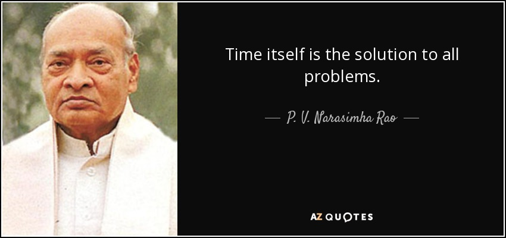

P. V. Narasimha Rao was an Indian politician who served as the 10th Prime Minister of India. Under his administration several major economic reforms were implemented which led to the dismantling of the License Raj, opening up the Indian economy for speedy economic development and growth. Because of this he is often referred to as the "Father of Indian Economic Reforms". The dismantling of the License Raj was a major milestone in the history of Indian economics as it reversed the socialist policies adopted by the successive Indian governments after the independence and paved the way for India to be an active participant in the wave of globalization which was sweeping through the world. With his brilliant administration and relentless actions aimed towards the country’s development. He was a multi-faceted personality who was also a scholar and an intellectual; he spoke 17 languages and had interests in varied subjects like computer programming and literature.